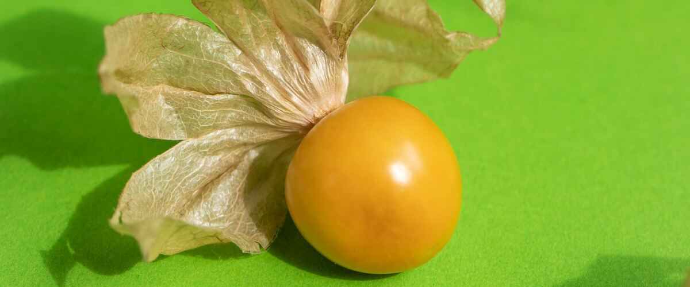

When to plant ground cherries in Ontario, OR
Start ground cherries from seed indoors Mar 13–27, then plant the young plants in the garden in Ontario May 1–29.
- Difficulty
- Easy
- Sun
- Full sun
- Spacing
- 2 to 3 feet apart
- Planting depth
- Bury the stem up to the first leaves, like tomatoes
- Frost
- Killed by frost
- First harvest
- About 70 days after planting
Why these dates
Ontario's typical last spring frost is April 21. Frost kills ground cherries, so planting starts once frost risk drops, around May 1. A late frost is still possible until about May 8 (that's when frost is over in 9 years out of 10), so keep row cover or a frost blanket handy for the first couple of weeks.
Columbia Basin and low eastern valleys. Hot, dry summers and quick spring warm-up. Warm crops go in earlier than west of the Cascades, and irrigation matters more than rain.
How to grow ground cherries in Ontario
- Start seeds indoors Mar 13–27 in trays or small pots under a grow light or in your sunniest window. Or skip this step and buy young plants (starts) at a garden center.
- Harden off the young plants: about a week before planting, set them outside for a few hours a day, a little longer each day.
- Plant them in the garden May 1–29, 2 to 3 feet apart. Bury the stem up to the first leaves, like tomatoes.
- Water deeply once or twice a week rather than a little every day, and mulch once the soil is warm.
- Harvest: Gather the fruit after it drops to the ground in its husk, when the husk is dry and tan and the fruit inside is golden. Rake or shake the plants every few days.
Key numbers
- 70–85°FSoil to sprout
- 65–75Days to harvest
- 1–2 feet, sprawlingPlant height
- Flea beetlesBiggest risk
Top care tip: Harvest the fruit once it drops to the ground in its papery husk, which means it's ripe.
Growing notes
What makes the difference in Northwest gardens, in plain language.
What ground cherries are
Ground cherries are small relatives of tomatillos and tomatoes. Each marble-sized golden fruit grows in a papery husk and tastes like a mix of pineapple and tomato. Unlike tomatillos, a single plant pollinates itself, so one or two plants are enough.
They ripen earlier and more reliably than most tomatoes, which makes them a good bet for cool west-side and coastal summers.
Growing and picking
Start seeds indoors about seven weeks before planting out, and plant them in warm soil after the last frost, buried a little deeper than they grew in the pot. They're low, sprawling plants, so give them room and skip the cage. Average soil is fine; too much nitrogen gives leaves instead of fruit.
The fruit drops to the ground when it's ready. Collect it every few days. Fruit in dry husks keeps for several weeks at room temperature.
Volunteers next year
Fruit you miss drops seed, and seedlings will pop up in that bed next year. Pull the extras or move a few to where you want them. Like tomatoes, don't grow them where tomatoes, peppers, eggplants or potatoes grew last year.
Common questions
When is the last frost in Ontario, OR?
Typically April 21. In 9 years out of 10, frost is over by May 8. These are 1991–2020 NOAA climate normals for Ontario Municipal Airport.
Is it too late to plant ground cherries in Ontario?
The spring planting window runs through May 29. Later plantings may not have time to produce before the first fall frost, which usually arrives around October 14.
When should I start ground cherries from seed indoors in Ontario?
March 13 to March 27, which is 7 to 5 weeks before the May 1 planting date. Or buy young plants at a garden center instead.
Are ground cherries the same as tomatillos?
They're close relatives, but ground cherries are smaller, sweeter and self-pollinating. Tomatillos are tart and need two plants to set fruit.
Are green ground cherries safe to eat?
No. Eat only fully golden fruit. Unripe fruit, leaves and husks contain compounds that can upset your stomach.
How do I know they're ripe?
They fall off the plant. The husk turns dry and tan, and the fruit inside is golden yellow.
Also plant in Ontario around the same time
Planting dates for ground cherries in nearby areas
- Baker City, OR May 25 – Jun 22
- Pendleton, OR May 1–29
- The Dalles, OR May 1–29
- Hood River, OR May 1–29
- Hermiston, OR May 1–29
- La Grande, OR May 20 – Jun 17
Full planting calendar for Ontario · Ground cherries in every city